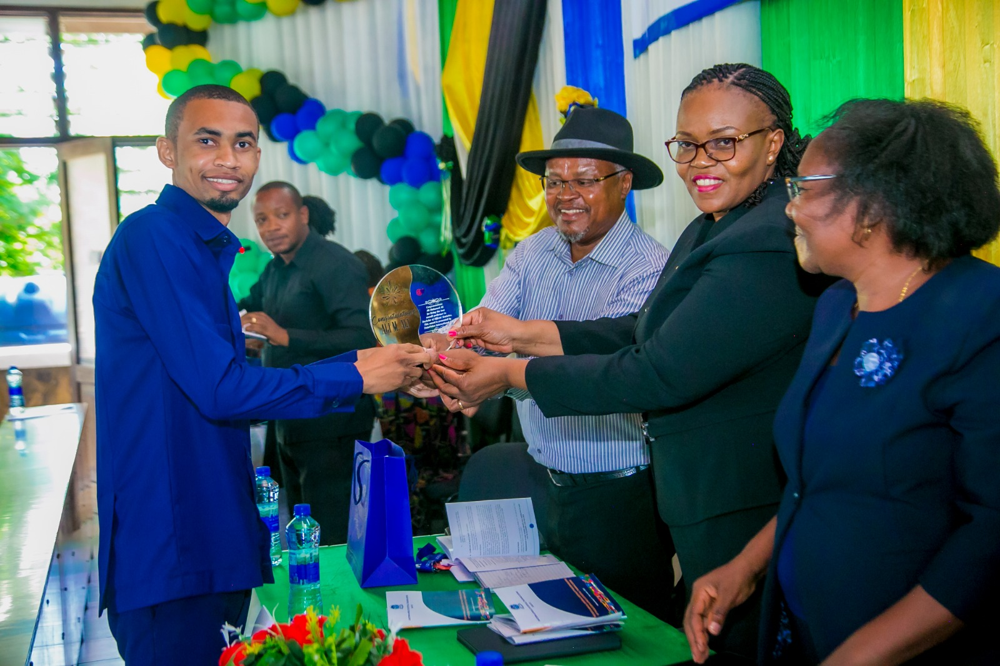
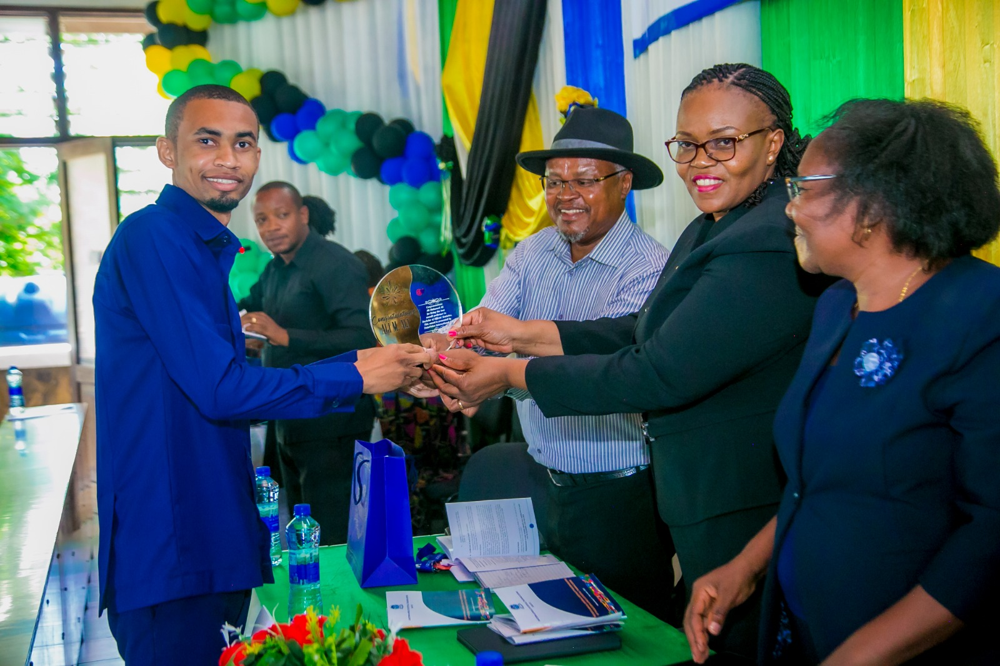

MAWASILIANO YA BARUA PEPE
Unaweza kupata tarifa za za tukio hili kubwa kupitia barua pepe yetu info@eastc.ac.tz
TUMA MAONI YAKO
Unaweza tuma maoni yako juu ya mada tajwa kupitia
eastern africa statistical training centre,
p.o box 35103,
dar es salaam,Tanzania.
About Us
HISTORIA YA MAHAFALI YA EASTERN AFRICA STATISTICAL TRAINING CENTER (EASTC)
 


.jpg)
.jpg)
.jpg)
KUANZISHWA KWA MAHAFALI
- Mahafali ya kwanza ya EASTC yalifanyika mwishoni mwa miaka ya 1960, mara baada ya chuo kuanza kutoa mafunzo.Hii ilikuwa ni hatua muhimu ya kuonyesha mafanikio ya awali ya chuo katika kutoa wataalamu wa takwimu
- katika miaka ya mwanzo,idadi ya wahitimu ilikua ndogo kutokana na dadi ya wanafubzi waliosajiliwa. Hata hivyo wahitimu wa awali walikua na humuhimu mkubwa kwa kuwa walikua miongoni mwa wataalamu wakwanza wa takwimu katika nchi zao, wakisaidia serikali na taasisi mbalimbali katika kukusanya na kuchambua data.
- kadri chuo kilivyokuwa kikikua na kuimarika ,idadi ya wahitimu iliongezeka. hii ilitokana na ongezeko la idadi ya wanafunzi na upanuzi wa programu za masomo.mahafali zikawa tukio kubwa zaidi, zikihusisha familia,marafiki,na viongozi wa serikali.
MAFANIKIO YA AWALI:
KUONGEZEKA KWA IDADI YA WAHITIMU:
USHIRIKIANO WA KIMATAIFA:
Kwa kuwa EASTC ni kituo cha kikanda ,mahafari zake zimekua na wahitimu kutoka nchi mbalimbali za Africa. Ushirikiano na taasisi za kimataifa kama UNSD umeongeza hadhi ya mahafali hizi,na mara nyingi wageni washuhuri kutoka mashariki haya wamealikwa kuhudhuria n akutoa hutuba.
MABADILIKO KATIKA PROGRAMU ZA MASOMO:
Pamoja na kuongezeka kwa programu za masomo,mahfali zimekuwa na wahitimu wa ngazi mbalimbali,kutoka cheti,diploma,hadi shahada ya uzamili.Hii imeongeza utofahuti na wingi wa wahitimu wanaotunukiwa vyeti katika mahafali hizo.
MAFANIKIO NA HESHIMA:
Mahafali za EASTC zimekuwa tukio la heshima kubwa kwa wahitimu ma familia zao.wahitimu wengi wa EASTC wanapata nafasi za kazi katika taasisi muhimu za kitaifa na kimataifa,na hivyo mahafali hizi zinakuwa sehemu ya kusherekea mafanikio na kuanza kwa hatua mpya katika maisha yao ya kitaaluma
EASTERN AFRICA STATISTICAL TRAINING CENTER ilifanya mahafali yake ya Tisa(9) mnamo December 14, 2023 maeneo ya mlimani city conference centre na mgeni rasmi alikuwa Waziri wa Fedha na mipango , Mheshimiwa Dkt.mwigilu Nchemba .na mahafali Hii ilikua na jumla ya wahitimu 426 kutoka katika programu mbalimbali zitolewazo na chuo. Wahitimu hawa walihitimu katika ngazi tofauti za vyeti,diploma,shahada,na shahada za uzamili katika takwimu rasmi,takwimu za kilimo, uchumi, na sayansi ya data.
RATIBA YA MAADHIMISHO YA 7 YA KITUO CHA MAFUNZO YA TAKWIMU AFRIKA MASHARIKI(EASTC)
MADA:kusasisha mifumo ya Takwimu ili kuongeza kasi ya utekelezaji wa eneo Huru la biashara la bara la AFRIKA (AfCFTA):nafasi ya takwimu rasmi na takimu kubwa (big data) katika mabadiliko ya kiuchumi na maendeleo endelevu ya Afrika
terehe:18 november 2024
kituo cha mafunzo ya takwimu Africa mashariki(EASTC)
08:00-09:00:usajili na kukaribisha washiriki
09:00-09:30: ufunguzi rasmi sala,u za makaribisho kutoka kwa MC, dua na wimbo wa taifa
09:30-10-00: Hotuba ya ufunguzi, mgeni rasmi:waziri wa Fedha na mipango
mada:kusasisha mifumo ya takwimuckwa ajili ya AfCFTA
10:00-10:30 mtoa mada:mkurugenzi wa EASTC
mada:kusasisha mifumo kwa ajili ya AfCFTA
10:30-12:00 majadiliano ya kijamiii
.watoa mada:wataalamu wa takwimu,wachumi na wawakilishi wa sekta binafsi
mada:"nafasi ya takwimu kubwa (big data) katika kugundua masoko na kuhudumia wateja Africa"
12:00-13:30 maswali na majibu
13:30-14:30 chakula cha mchana
14:30-15:30 majadiliano ya vikundi
15:30-16:30 uwasilishaji wa ripoti za vikundi
16:30-17:00 Hitimisho na kufunga (picha ya pamoja )